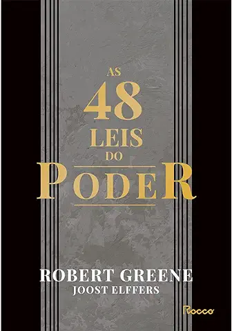
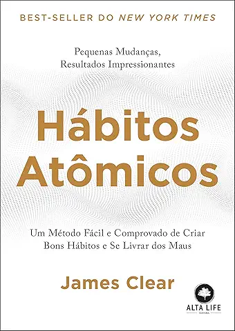
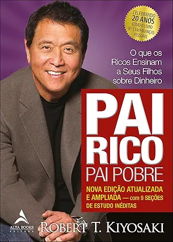

.svg)
A Biblioteca da Meia-Noite (Matt Haig)

"A Biblioteca da Meia-Noite" é um romance fascinante que explora os infinitos caminhos que a vida pode tomar e a constante busca pelo rumo ideal. Nora Seed, aos 35 anos, é uma mulher cheia de habilidades, mas que sente ter realizado pouco. Consumida pelo arrependimento de decisões passadas, Nora frequentemente se pergunta como sua vida poderia ter sido se tivesse feito escolhas diferentes. Após perder o emprego e vivenciar a morte trágica de seu gato, sua existência perde o sentido, e ela decide dar um fim à própria vida. No entanto, ao despertar na misteriosa Biblioteca da Meia-Noite, Nora recebe uma chance extraordinária: viver todas as vidas que poderia ter tido. Nesse espaço mágico entre a vida e a morte, e com a orientação de uma antiga amiga, ela pode finalmente mudar seu destino. Seja se mudando para a Austrália, reatando laços antigos, se tornando uma estrela do rock, glaciologista ou nadadora olímpica, as possibilidades parecem infinitas. Mas será que alguma dessas alternativas será realmente melhor que sua vida original? Ao embarcar nessa jornada única, Nora se encontra diante de uma oportunidade que muitos desejariam: reescrever o passado e corrigir os arrependimentos. Enquanto explora os livros da Biblioteca da Meia-Noite, ela mergulha profundamente em suas escolhas e descobre o que realmente importa para que a vida valha a pena. "Um universo de possibilidades e novos caminhos, perfeito para tempos difíceis e cheios de incertezas." The New York Times
As 48 Leis do Poder (Robert Greene)
"As 48 Leis do Poder" é um guia para compreender e dominar as dinâmicas do poder, explorando como manipular situações e pessoas para atingir objetivos. Robert Greene apresenta lições como "Não ofusque o brilho do mestre", ensinando a exaltar superiores para alcançar o sucesso, e "Não se comprometa com ninguém" ou "Aniquile totalmente o inimigo". O autor ilustra as leis com histórias reais e citações de estrategistas como Sun Tzu, diplomatas como Maquiavel e filósofos como Nietzsche. O livro abrange mais de três mil anos de história, reunindo ensinamentos de diferentes culturas. Greene argumenta que o controle emocional é essencial para exercer poder e que o mundo é um jogo social inevitável: "Se o jogo do poder é inevitável, é melhor ser um artista nele do que agir de forma desastrada."
As coisas que você só vê quando desacelera: Como manter a calma em um mundo frenético (Haemin Sunim)

"As Coisas que Você Só Vê Quando Desacelera", do mestre zen-budista Haemin Sunim, é um convite à calma e à autocompaixão. Este livro inspirador ajuda a enxergar relacionamentos, trabalho e espiritualidade sob uma nova perspectiva, mostrando como a atenção plena pode transformar nossa vida. Com delicadas ilustrações, Sunim nos lembra que o mundo reflete o estado de nossa mente: quando estamos em paz, o mundo parece mais leve; quando agitados, ele se torna sombrio. Um guia essencial para quem busca tranquilizar os pensamentos e viver com mais serenidade.
Como falar em público e encantar as pessoas (Dale Carnegie)

Neste livro, Dale Carnegie ensina como planejar e organizar apresentações eficazes, seja para um pequeno grupo ou um grande auditório. Você aprenderá a entreter, informar, persuadir e inspirar sua audiência, além de superar o medo de falar em público de forma definitiva. Carnegie mostra que falar em público não é um risco a ser temido, mas uma oportunidade a ser aproveitada com confiança. Ao aplicar os ensinamentos do livro, sua habilidade de se expressar com autenticidade e entusiasmo se tornará um valioso trunfo para sua carreira e sua autoconfiança.
Hábitos Atômicos: Um Método Fácil e Comprovado de Criar Bons Hábitos e Se Livrar dos Maus (James Clear)
BEST-SELLER DO NEW YORK TIMES. "Hábitos Atômicos" é um guia prático de James Clear para criar bons hábitos, eliminar os maus e alcançar resultados duradouros com pequenas mudanças diárias. O autor, especialista em formação de hábitos, ensina estratégias baseadas em conceitos de biologia, psicologia e neurociência, mostrando como o sistema certo é a chave para o sucesso, não apenas a força de vontade. Com histórias inspiradoras de atletas, artistas, líderes e profissionais de diversas áreas, o livro explora como hábitos consistentes podem transformar sua vida, seja para atingir metas pessoais, reinventar carreiras ou melhorar a saúde e o bem-estar. "Um guia magistralmente prático. James Clear filtra as informações mais importantes sobre a formação de hábitos, para que você possa ter mais sucesso se preocupando menos." - Mark Manson, autor de A Sutil Arte de Ligar o F*da-se.
O Meu Pé de Laranja Lima (José Mauro de Vasconcelos)

"O Meu Pé de Laranja Lima" é um clássico da literatura brasileira que emociona gerações. Publicado em 1968, o livro é inspirado na vida do autor e combina alegria e tristeza de forma marcante. A história acompanha Zezé, um garoto de 6 anos que vive num bairro humilde no Rio de Janeiro. Com a família enfrentando dificuldades financeiras, ele lida com as restrições do mundo ao seu redor com imaginação e travessuras, mas também enfrenta surras e sofrimento. Apesar disso, encontra refúgio em seu universo de fantasia e no apego à vida. Com personagens cativantes e cenas tocantes, a obra explora temas de perda, esperança e superação, o que explica sua popularidade e suas adaptações para cinema, teatro e televisão.
Pai Rico, Pai Pobre (Robert T. Kiyosaki)
"Pai Rico, Pai Pobre" questiona se a escola realmente prepara as crianças para o mundo real, especialmente no que diz respeito à educação financeira. Para Robert Kiyosaki, notas altas e boa formação não garantem sucesso, pois o sistema educacional não ensina sobre dinheiro, investimentos ou como conquistar independência financeira. O autor alerta sobre o conselho comum de "estudar, tirar boas notas e procurar um trabalho seguro", argumentando que essa abordagem não reflete mais a realidade atual, onde empregos garantidos são raros. A obra sugere que o verdadeiro desafio é tomar controle do próprio destino financeiro, em vez de delegá-lo a outros. Kiyosaki também apresenta ferramentas práticas para pais ensinarem inteligência financeira aos filhos, indo além dos métodos convencionais. O livro propõe repensar conceitos tradicionais e adotar estratégias modernas para alcançar segurança ou independência financeira. "A principal razão pela qual as pessoas têm problemas financeiros é que passaram anos na escola, mas não aprenderam nada sobre dinheiro... Elas aprendem a trabalhar por dinheiro, mas não a fazê-lo trabalhar para elas." Robert Kiyosaki.
Tudo é Rio (Carla Madeira)
Tudo é rio, de Carla Madeira, é um romance de estreia que combina delicadeza e intensidade em uma narrativa poética e precisa. A trama acompanha Dalva e Venâncio, um casal cuja vida é devastada por uma tragédia causada pelo ciúme doentio do marido. A história se complica com a chegada de Lucy, uma prostituta desejada e controversa, que forma com eles um triângulo amoroso marcante. Martha Medeiros descreve a obra como uma verdadeira obra-prima, destacando sua capacidade de prender o leitor em uma correnteza de emoções e eventos. "É um daqueles livros que, ao terminar, sentimos vontade de reler imediatamente, desta vez saboreando cada frase e mergulhando mais fundo na poesia da prosa." A metáfora do rio permeia toda a narrativa, refletindo o fluxo contínuo de emoções e acontecimentos, ora intensos, ora calmos, representados também pelo suor, sangue, lágrimas e outros fluidos humanos. Com habilidade e sensibilidade, Carla Madeira conduz a história sem apelar para exageros, revelando um talento raro na literatura contemporânea.
A lâmina da assassina: Histórias de Trono de Vidro (Sarah J. Maas)

Descubra o caminho da assassina, forjado em sangue, lágrimas e suor. Celaena Sardothian é letal, sedutora e implacável. Seu nome é sinônimo de morte, suas lâminas são infalíveis e seu peculiar senso de justiça, inegociável. Poucos conhecem seu rosto, e menos ainda sobrevivem para contar. Mas como uma garota, resgatada pelo Rei dos Assassinos de Adarlan à beira da morte, tornou-se a campeã do rei? Como ela atraiu o interesse do capitão da guarda real e do príncipe herdeiro, enquanto se vê no centro de intrigas políticas? Acompanhe Celaena em suas jornadas: enfrentando um lorde pirata e sua tripulação; encontrando uma curandeira misteriosa; treinando com o Mestre Mudo, senhor dos assassinos silenciosos, nas dunas do Deserto Vermelho; sobrevivendo à prisão nas Minas de Sal de Endovier; e, por fim, lutando contra o adversário mais traiçoeiro de todos — seu próprio coração.
É Assim Que Acaba (Colleen Hoover)

Reconhecido como o livro do ano e um verdadeiro fenômeno no TikTok, "É Assim que Acaba" já ultrapassou a marca de um milhão de exemplares vendidos no Brasil. Considerado o romance mais íntimo da carreira de Colleen Hoover, a obra aborda de forma direta e sensível temas como violência doméstica e abuso psicológico. Na história, conhecemos Lily, uma jovem que deixa sua pequena cidade no Maine para viver em Boston. Após se formar em marketing, ela realiza o sonho de abrir sua própria floricultura. É em um dos terraços da cidade que Lily conhece Ryle, um neurocirurgião confiante, teimoso e um tanto arrogante, que evita relacionamentos, mas sente uma forte atração por ela. Conforme o romance entre eles se desenvolve, Lily se depara com uma relação conturbada e muito distante do que esperava. Será que ela conseguirá enfrentar essa realidade, por mais dolorosa que seja? "É Assim que Acaba" é uma história impactante que explora a força necessária para tomar decisões difíceis em momentos de adversidade. Nesta obra, Colleen Hoover não hesita em tocar em temas delicados para descrever a complexidade das relações tóxicas, mostrando como amor e abuso podem se misturar em uma confusão de sentimentos. "Um romance intenso e devastador, que prende o leitor do início ao fim. Ninguém escreve sobre emoções como Colleen Hoover." — Anna Todd, autora da série After.